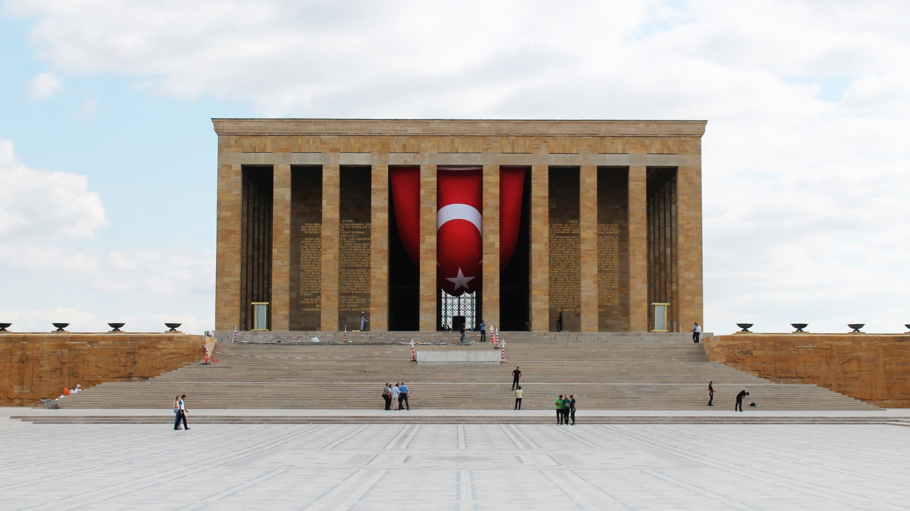
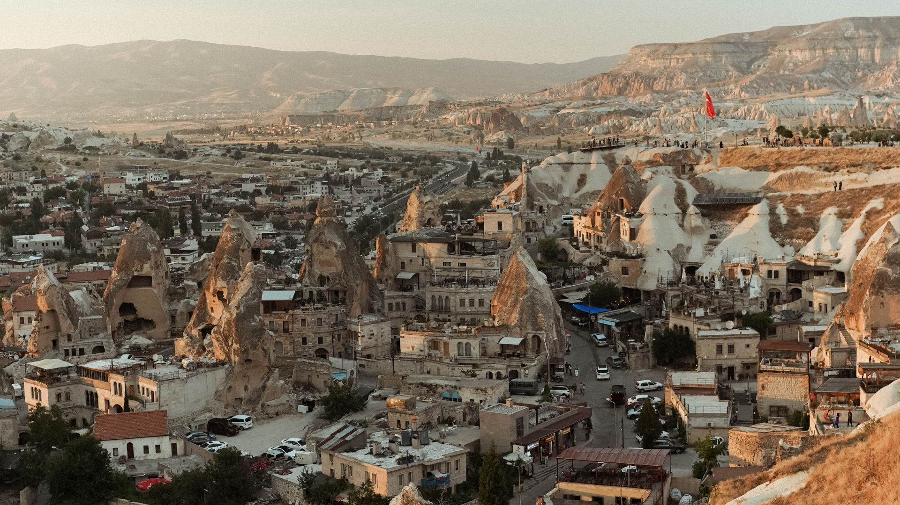
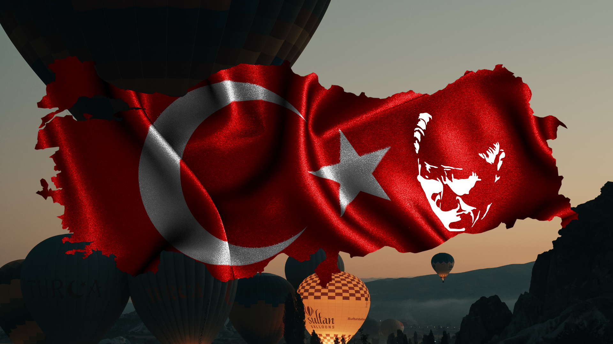

"Ey Türk gençliği! Birinci vazifen; Türk istiklalini, Türk cumhuriyetini, ilelebet muhafaza ve müdafaa etmektir. Mevcudiyetinin ve istikbalinin yegâne temeli budur. Bu temel, senin en kıymetli hazinendir. İstikbalde dahi seni bu hazineden mahrum etmek isteyecek dâhilî ve haricî bedhahların olacaktır. Bir gün, istiklal ve cumhuriyeti müdafaa mecburiyetine düşersen, vazifeye atılmak için içinde bulunacağın vaziyetin imkân ve şeraitini düşünmeyeceksin. Bu imkân ve şerait, çok namüsait bir mahiyette tezahür edebilir. İstiklal ve cumhuriyetine kastedecek düşmanlar, bütün dünyada emsali görülmemiş bir galibiyetin mümessili olabilirler. Cebren ve hile ile aziz vatanın bütün kaleleri zapt edilmiş, bütün tersanelerine girilmiş, bütün orduları dağıtılmış ve memleketin her köşesi bilfiil işgal edilmiş olabilir. Bütün bu şeraitten daha elim ve daha vahim olmak üzere, memleketin dâhilinde iktidara sahip olanlar, gaflet ve dalalet ve hatta hıyanet içinde bulunabilirler. Hatta bu iktidar sahipleri, şahsi menfaatlerini müstevlilerin siyasi emelleriyle tevhit edebilirler. Millet, fakruzaruret içinde harap ve bitap düşmüş olabilir. Ey Türk istikbalinin evladı! İşte, bu ahval ve şerait içinde dahi vazifen, Türk istiklal ve cumhuriyetini kurtarmaktır. Muhtaç olduğun kudret, damarlarındaki asil kanda mevcuttur."
Dünya Savaşı sonunda Osmanlı İmparatorluğu ile İtilaf Devletleri arasında imzalanan mütarekename (mütareke belgesi). Osmanlı İmparatorluğu adına Bahriye Nazırı Rauf Bey tarafından, Limni adasının Mondros Limanı'nda demirli Agamemnon zırhlısında 30 Ekim 1918 akşamı imzalanmıştır.
30 Ekim 1918
Mustafa Kemal'in Samsun'a çıkışı, 19 Mayıs 1919 tarihinde 9. Ordu Müfettişi Mustafa Kemal'in Bandırma Vapuru ile yapılan yolculuk sonrası Samsun'a ulaşması olayı. Bu olay Kurtuluş Savaşı'nın fiili başlangıcı olarak kabul edilmektedir.
19 Mayıs 1919
Mustafa Kemal ve yol arkadaşları Havza'dan Amasya'ya hareket ettiler. Ulusal Kurtuluş Savaşımızın önemli hazırlık adımı ve Anadolu direnişinin ilk belgesi olan Amasya Genelgesi, 21-22 Haziran 1919'da Amasya'da hazırlanarak Anadolu'nun doğusundan batısına tüm valiliklere ve birliklere gönderildi.
22 Haziran 1919
Erzurum Kongresi, 23 Temmuz-7 Ağustos 1919 tarihleri arasında Erzurum'da toplanan kongredir. 17 Haziran'da Vilâyât-ı Şarkıye Müdâfaa-i Hukuk Cemiyeti Erzurum şubesi tarafından toplanan Erzurum Kongresi, Erzurum Umûmî Kongresi veya Umûmî Erzurum Kongresi olarak da anılır.
23 Temmuz-7 Ağustos 1919
Dünya Savaşı'ndan sonra işgale uğrayan Türk topraklarını kurtarmak ve Türk milletinin bağımsızlığını sağlamak için çareler aramak amacıyla seçilmiş ulus temsilcilerinin Sivas'ta bir araya gelmesiyle, 4 Eylül 1919 - 11 Eylül 1919 tarihleri arasında gerçekleşen ulusal nitelikte bir kongredir.
4-12 Eylül 1919
Maraş Muharebesi, I. Dünya Savaşı'nda yenilmesi üzerine, Osmanlı İmparatorluğu ile 30 Ekim 1918'de imzalanan Mondros Mütarekesi çerçevesinde Anadolu'nun birçok yeri gibi Maraş'ın da işgal altına girmesi ile işgal güçlerine karşı 21 Ocak 1920'de başlayan direniş, 12 Şubat 1920 tarihinde işgalin ortadan kalkması ile sonuçlanmıştır.
12 Şubat 1920
Mondros Mütarekesi'nin 7. maddesine göre Urfa şehri 24 Mart 1919'da işgal edildi. 11 Nisan 1920'de ise Fransızlar Urfa'dan çekilmek zorunda kaldılar. Böylece Urfa, işgalden kurtulmuş oldu.
10-11 Nisan 1920
23 Nisan 1920'de Ankara'da toplanan Türkiye Büyük Millet Meclisi bünyesinde, ilk olarak 25 Nisan'da Muvakkat (geçici) İcra Encümeni sıfatıyla, TBMM Reisi Mustafa Kemal Paşa başkanlığında bir hükûmet oluşturuldu. Böylece, İstanbul'daki Osmanlı hükûmeti dışında Ankara'da bir hükûmet ortaya çıkmış oldu.
23 Nisan 1920
Sakarya Meydan Muharebesi, Atatürk tarafından çok büyük ve kanlı savaş anlamına gelen Melhame-i Kübra ifadesi ile anılan, Türk Kurtuluş Savaşı'nın önemli bir muharebesi. Sakarya Meydan Muharebesi, Kurtuluş Savaşı'nın dönüm noktası sayılır. İsmail Habip Sevük, Sakarya Meydan Muharebesi'nin önemini, "13 Eylül 1683 günü Viyana'da başlayan çekilme, 238 sene sonra Sakarya'da durdurulmuştur." sözüyle tasvir etmiştir.
23 Ağustos-13 Eylül 1921
15 Eylül 1919 tarihinde imzalanan Suriye İtilafnamesi ile İngiltere ve Fransa anlaşmaya varmıştır. İngiltere, Suriye İtilafnamesine göre 29 Ekim 1919'da Güney bölgesini ve Antep'i Fransız işgaline terk etmiştir.
25 Mart 1921
Bakanlar Kurulu taarruz kararını almış ve 14 Ağustos 1922 tarihinde kolordular taarruz için yürüyüşe geçmiş, 26 Ağustos'ta saldırı başlamış, 9 Eylül'de Türk Ordusu İzmir'e girmiş ve 18 Eylül'de de Yunan Ordusu'nun Anadolu'yu tamamen terk etmesiyle savaş sona ermiştir.
26 Ağustos 1922
Başkomutanlık Meydan Muharebesi ya da Dumlupınar Meydan Muharebesi, Kütahya'ya bağlı Dumlupınar yakınında 30 Ağustos 1922'de Türk ve Yunan orduları arasında meydana gelen savaştır. Başkomutan Mustafa Kemal Paşa tarafından şahsen yönetildiği için Başkomutanlık Meydan Muharebesi olarak anılır. İstiklal Savaşı'nın kesin bir Türk zaferiyle sonuçlanmasını sağlayan bu çarpışmanın yıl dönümü Türkiye'de ulusal bayram olarak kutlanmaktadır.
30 Ağustos 1922
3 Ekim 1922 Salı günü saat 15.15 te görüşmelerine başlanıp 11 Ekim 1922 Çarşamba sabahı saat 6 da imzalanan Mudanya Mütarekesi, İsmet İnönü'nün askeri başarısının yanı sıra diplomatik alanda da göstermiş olduğu kararlı ve dik duruşuyla kazanılmış siyasi bir zaferdir.
11 Ekim 1922
Lozan Antlaşması (Dönemin Türkçesi ile Lozan Sulh Muâhedenâmesi), 24 Temmuz 1923 tarihinde İsviçre'nin Lozan şehrinde, Türkiye Büyük Millet Meclisi temsilcileriyle Britanya İmparatorluğu, Fransız Cumhuriyeti, İtalya Krallığı, Japon İmparatorluğu, Yunanistan Krallığı, Romanya Krallığı ve Sırp, Hırvat ve Sloven Krallığı (Yugoslavya) temsilcileri tarafından, Leman Gölü kıyısındaki Beau-Rivage Palace'ta imzalanmış bir barış antlaşmasıdır.
24 Temmuz 1923
İsmet Paşa (İnönü), bir kanun teklifi hazırlayarak Türkiye Büyük Millet Meclisi Başkanlığı'na sundu. "Türkiye Devleti'nin başkenti Ankara'dır." şeklindeki bir maddelik kanun teklifi kabul edildi (13 Ekim 1923). Kanunun yürürlüğe girmesiyle Ankara yeni Türk devletinin başkenti oldu.
13 Ekim 1923
Cumhuriyetin ilanı, hukuksal olarak İkinci Dönem Türkiye Büyük Millet Meclisinin 29 Ekim 1923 günü gerçekleşen oturumunda Mustafa Kemal'in hazırladığı anayasa değişikliği teklifinin kabul edilmesiyle Türkiye Devleti'nin yönetim şeklinin cumhuriyet olarak belirlenmesidir.
29 Ekim 1923
Halifeliğin kaldırılması, Türkiye Büyük Millet Meclisinin 3 Mart 1924 tarihinde çıkardığı kanunla halifelik makamını kaldırmasıdır. Devletin laikleştirilmesi yolunda yapılmış siyasi bir devrimdir.
3 Mart 1924
TBMM, Kanun-ı Esasi Teklifini 9 Mart 1924 tarihinde görüşme- ye başlamış ve 9 birleşim, 15 oturumda, yaklaşık 30 saatlik bir çalışma sonucu 20 Nisan 1924 tarihinde kabul etmiştir.
20 Nisan 1924
Medeni Kanun 17 Şubat 1926′da TBMM tarafından kabul edilerek yürürlüğe girmiştir. Medeni kanunun kabul edilmesiyle, Aile yapısında önemli değişiklikler meydana gelmiştir. Kadınlar için bir milad olmuştur.
17 Şubat 1926
Harf Devrimi, Türkiye'de 1 Kasım 1928 tarihinde 1353 sayılı "Türk Harflerinin Kabul ve Tatbiki Hakkında Kanun"un kabul edilmesi ve yeni alfabenin yerleştirilmesi sürecine genel olarak verilen isimdir. Yasa, 3 Kasım 1928 günü Resmî Gazete'de yayımlanarak yürürlüğe girmiştir. Bu yasanın onaylanmasıyla o güne değin kullanılan Arap harfleri esaslı Osmanlı alfabesinin geçerliliği son buldu ve Latin harflerini esas alan Türk alfabesi yürürlüğe kondu.
1 Kasım 1928
1930 yılından itibaren çıkarılan bir dizi yasa ile önce Belediye seçimlerine katılma, sonra köylerde muhtar olma ihtiyar meclislerine seçilme hakkı tanınan kadınların milletvekili seçme ve seçilme hakları, 5 Aralık 1934'te Anayasa ve Seçim Kanunu'nda yapılan yasa değişikliği ile tanındı.
11 Kasım 1934